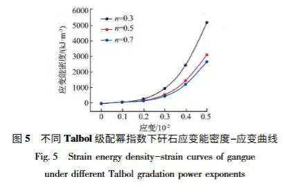
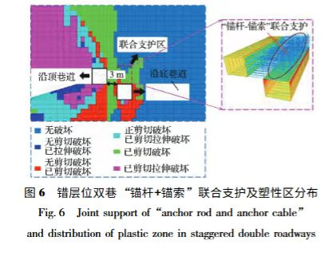
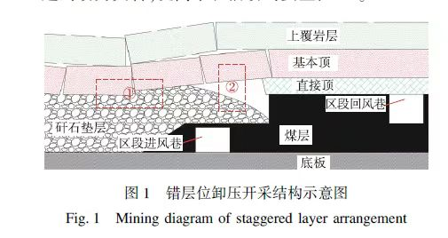
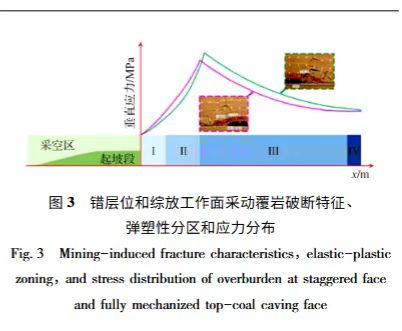
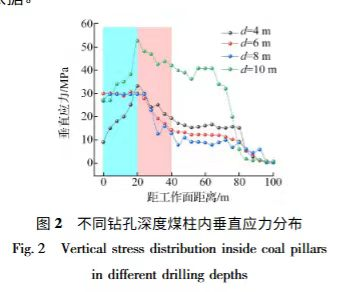
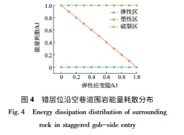

模拟地下开采
复现地下错层位矿体开采场景，按"矿体层—砂岩层—松散层"分层铺设模拟材料，呈现采动引起的上覆岩层运动。
针对开采范围扩大引发覆岩运动加剧的现实挑战，构建小型化、可视化、可交互的试验平台。
复现地下错层位矿体开采场景，按"矿体层—砂岩层—松散层"分层铺设模拟材料，呈现采动引起的上覆岩层运动。
在煤层上方参考层位布置监测装置，实时捕捉覆岩关键层位移与裂隙、离层的发育动态，研判需要干预的区域。
当岩层明显位移、离层发展但尚未大范围垮落时，自动启动地面注浆系统，对目标区域靶向注浆并反馈调节。
项目聚焦矿山绿色开采领域"地表下沉精准控制"核心痛点。传统采后灌浆存在时机难确定、层位缺乏科学依据的局限；本模型以"提前定层—实时监测—动态注浆"为核心思路，从源头优化注浆干预的有效性。
通过小型化设计与透明观察层，直观呈现岩层移动与注浆扩散的内在关联，为实际矿山制定地表保护方案提供低成本、可复制的试验载体，助力绿色矿山建设。
"提前定层—开采监测—数据研判—智能注浆"的协同控制逻辑。
结合关键层位置与隔浆层条件，确定监测目标层与注浆出口的合理层位。
自动开采推进，采空区上覆岩层运动，监测位移、下沉与离层发展。
在明显位移、离层发展且尚未大范围垮落时，判断需要干预的区域。
启动地面注浆系统，靶向注浆并反馈调节，最终实现自动停止。
煤层、覆岩、地表、监测杆、独立注浆管、地面泵与控制器。
工作面推进，后方形成采空区，监测持续进行。
近煤层顶板破碎堆积、上方裂隙离层、再上方整体弯沉的三带演化。
监测杆感知杆件变形，示意检测岩层位移，进入干预阶段。
地面泵向目标层下方候选离层空间送浆，按需干预。
持续观察位移响应，调节注浆压力与流量。
减量、停止注浆，回到整体观察沉降控制的预期作用。
按传统"上三带"概念表达：三带不是三种岩性，也不是三个注浆区。
岩层破碎成块，转动、下落并堆积，原有层状连续性遭到破坏。
仍可辨认层状结构；出现竖向、斜向断裂和水平离层，并非全部散落。
层理总体连续，随下部运动弯曲下沉；不表示绝对没有裂隙或离层。
分界虚线仅为示意，非实测带高；50 米是监测目标层参考位置，不是三带分界。实际带高受采厚、岩性、结构与开采条件影响。
左为"自动注浆"、右为"未注浆"，同一进度同步对照；拖动旋转、滚轮缩放。
播放／暂停／重置；上一步／下一步；七个阶段按钮直接跳转；进度条拖动回看；速度 0.25×–2×。"实验箱／矿井剖面"切换视图，"自动镜头"与全景、开采、覆岩三带、监测杆、注浆、地表等局部镜头观察细节。可开关"透视内部结构""显示中文标注""放大岩层变形""左右同步对照"。
本项目尚未开展实验，没有现场数据。画面所有曲线数值、趋势、时序、尺寸与设备布局均为示意，不代表实测参数、真实控制阈值或实际矿井过程。"煤层上方 50 米"是原型参考高度，画面未按工程比例绘制。浆液流动、填充与凝固为外观示意，凝固时间经压缩。
能源与矿业学院 · 采矿工程 24-1
中国矿业大学（北京）能源与矿业学院
用于核对概念与表达，未用于标定本模型的带高、变形幅度、时序或注浆效果。
点击图片可放大查看。





